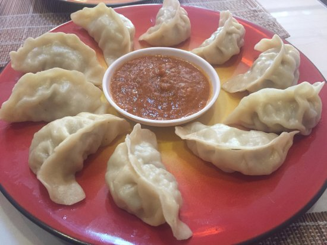
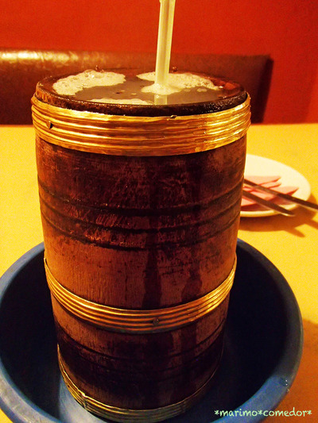

タカリカーナセット（食事）は、魅力的な味と様々な部分として提供されるため、 ネパールで広く祝われています. そばで作られたおいしい明るい灰色のタカリパンケーキ、Aloo Jimbu skutiで最もお勧め。

も：も モモは、ある種の詰め物が入った蒸しdump子の一種です。 モモは、ネパール、チベット、およびブータンのネパール/チベット人コミュニティ、 およびインドのラダック、北東インド、ダージリン地域の伝統的な珍味となっています

トンバは、ネパールの東部の山岳地帯と、近隣のダージリンとシッキムで見つかったキビベースのアルコール飲料です。 ネパール東部のリンブ族の伝統的で土着の飲み物です。 トンバはネパール東部のリンブ族にとって文化的および宗教的に重要です
Everyday morning 9:00am-22:00pm。